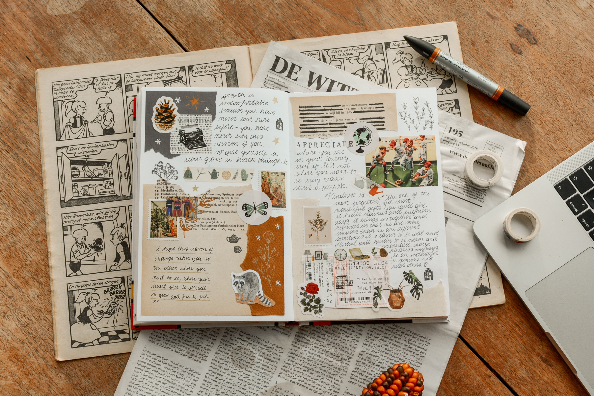

Celebrating the Influence and Creativity of Women in Design
Women play a pivotal role, in enriching the field of design with diverse perspectives, creativity, and innovation. Their unique insights and talents challenge traditional norms, profoundly shaping visual communication.

Elizabeth Friedländer
Elizabeth Friedländer, a pioneering designer and typographer, made significant contributions to the field of graphic design during the mid-20th century. Born in Germany, Friedländer fled the Nazi regime and settled in London, where she continued her design career. She was renowned for her innovative approach to typography, blending traditional techniques with modern aesthetics. Friedländer's expertise in type design became evident through her influential work at the Pelican Books, where she crafted distinctive, readable typefaces. Her designs emphasised clarity and functionality, ensuring optimal readability for a wide audience.
Friedländer's legacy extends beyond her notable contributions to typography. She was also a trailblazer for women in design, breaking gender barriers in a male-dominated industry. Her determination and talent paved the way for future generations of female designers, inspiring them to pursue their creative passions fearlessly. Friedländer's meticulous craftsmanship and dedication to her craft continue to be celebrated, serving as a testament to her enduring impact on graphic design and her role as a trailblazer for women in the field.
In addition to her remarkable achievements in typography, Elizabeth Friedländer's influence extended to various design disciplines, including book cover and layout design. Her keen sense of balance, attention to detail, and innovative use of imagery set her work apart. Friedländer's designs were characterised by their elegance and simplicity, often incorporating captivating visuals that complemented the book's content seamlessly. Her ability to create visually striking and cohesive designs made her a sought-after designer, shaping the aesthetics of numerous publications.
Paula Scher
A principal designer for influential design consultancy Pentagram, Paula Scher, a prominent graphic designer and artist, has made indelible marks on the world of design through her innovative and bold creations. Scher's work is characterised by her exceptional use of typography and vibrant visual language. One of her most iconic contributions is her redesign of the visual identity for the Public Theater in New York City. Scher's approach was revolutionary; she combined expressive typography with dynamic imagery, creating a distinctive and memorable brand identity. Her use of large, bold lettering coupled with imaginative illustrations transformed the Public Theater's image, making it a testament to the power of graphic design in shaping public perception and cultural institutions.
Scher's versatility as a designer is reflected in her diverse body of work, which spans across various mediums such as branding, packaging, and environmental design. Her ability to seamlessly blend typography and imagery allows her to convey complex messages with clarity and creativity. Scher's designs often provoke thought and evoke emotions, capturing the essence of the subject matter while pushing the boundaries of conventional design. Her fearless approach to experimenting with different styles and techniques has earned her recognition and respect in the design community, inspiring aspiring designers to explore the limitless possibilities within the realm of graphic design.
Beyond her artistic prowess, Scher's influence extends to her role as an educator and author. Through her lectures, writings, and mentorship, she has nurtured the talents of countless designers, shaping the next generation of creative thinkers. Scher's work continues to serve as a source of inspiration for designers worldwide, illustrating the profound impact of thoughtful and visually striking design on shaping culture and communication.
"My work is play. And I play when I design. I even looked it up in the dictionary, to make sure that I actually do that, and the definition of 'play,' number one, was 'engaging in a childlike activity or endeavor,' and number two was 'gambling.' And I realize I do both when I'm designing"
― Paula Scher
Jessica Hische
Jessica Hische, a talented graphic designer, and lettering artist, has made significant contributions to the design world with her distinctive style and creative innovation. Her work is characterised by intricate lettering and playful illustrations, showcasing a perfect blend of traditional craftsmanship and modern design sensibilities. Hische's typographic creations are known for their intricate details and unique personality, capturing the essence of the subject matter in a visually compelling way. Her lettering work spans various mediums, from book covers and editorial designs to branding and advertising, demonstrating her versatility and skill in transforming words into captivating visual art.
One of Hische's notable achievements is her expertise in the art of drop caps, where she reimagines and elevates the first letter of a text with intricate and ornate designs. Her mastery of typography shines through in these elaborate drop caps, which not only enhance the readability of the text but also serve as exquisite decorative elements, adding a touch of elegance and sophistication to the overall design. Hische's ability to infuse personality and emotion into her letterforms sets her apart, making her a sought-after designer for projects that require a unique and artistic approach to typography.
Furthermore, Hische is dedicated to sharing her knowledge and passion for design with the world. Through her online presence, workshops, and speaking engagements, she inspires and educates aspiring designers, providing valuable insights into her creative process and the art of lettering. By fostering a sense of community and encouraging creativity, Hische continues to have a profound impact on the design community, shaping the future of typography and graphic design with her innovative and imaginative work.
Other notable designers
Marian Bantjes: A Canadian designer and typographer recognized for her intricate and detailed work in graphic design.
Debbie Millman: Graphic designer, author, and host of the podcast "Design Matters," Debbie Millman has been a significant influence on contemporary graphic design.
Jessica Walsh: A visionary graphic designer celebrated for her bold and visually striking work, making a notable impact on contemporary design.
April Greiman: A pioneer in digital design, April Greiman has been at the forefront of merging technology and design in the late 20th century.
Louise Fili: A graphic designer and lettering artist, Louise Fili is celebrated for her elegant and timeless designs, particularly in the realm of food and restaurant branding.
Margaret Calvert: A highly influential British graphic designer, renowned for her pivotal role in co-designing the iconic road signs of the United Kingdom and for her significant contributions to the field of graphic design.